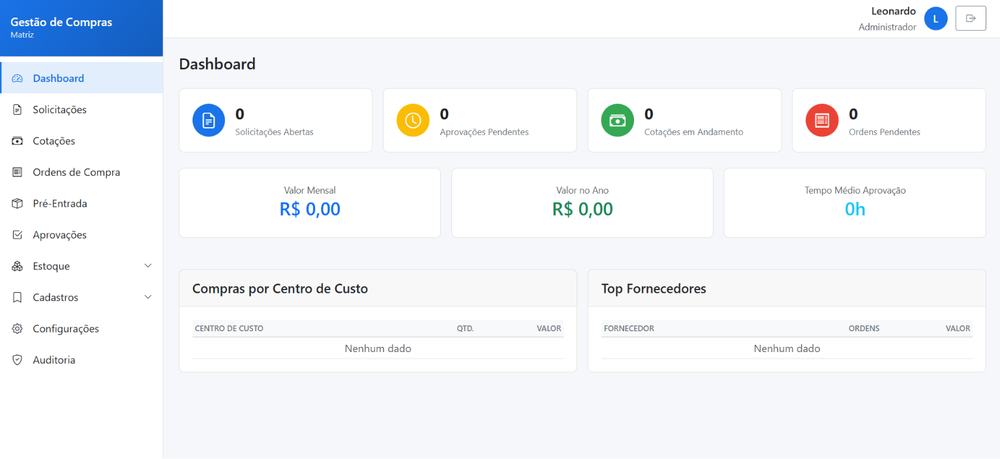
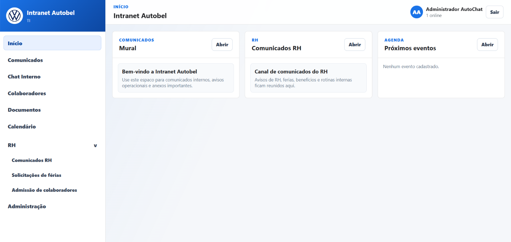
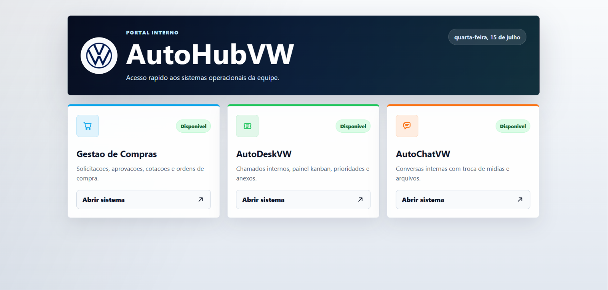
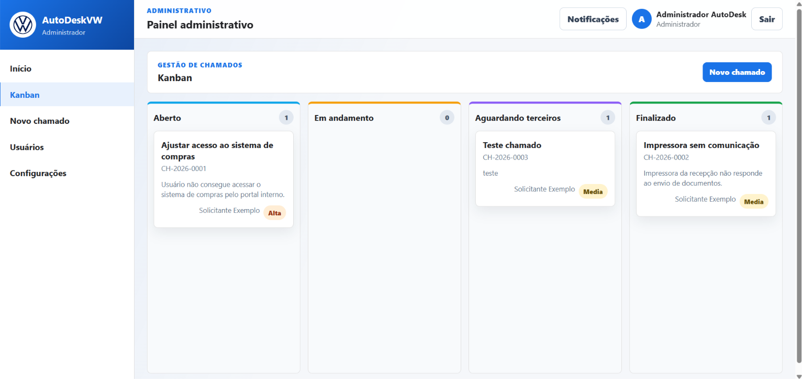

anos conectando tecnologia, ERP, suporte e áreas de negócio.
Analista de Sistemas | QA | ERP | SQL
Projetos internos com foco em processo, estabilidade e clareza operacional.
Sou Leonardo Pedrini, profissional de tecnologia com mais de 7 anos de experiência em ambientes ERP, validação de requisitos, testes, APIs, banco de dados e suporte a implantações. Este portfólio reúne sistemas criados para resolver fluxos reais de TI e negócio.
Gestão de Compras
Solicitação -> Cotação -> Aprovação ->OC -> NF
AutoHubVW
Portal de acesso aos sistemas internos.
Intranet
Comunicação, processos e documentos.
AutoDeskVW
Chamados, Kanban e notificações.
vivência com LINX DMS Bravos, B2B, integrações e processos fiscais.
testes manuais, validação de APIs REST, homologação e documentação.
Sobre mim
Um perfil técnico com leitura de negócio.
Atuo do levantamento de requisitos aos testes, homologações e suporte à implantação, com foco em documentar bem, reduzir retrabalho e entregar sistemas que sejam simples de operar. Minha experiência passa por SQL/MySQL, NoSQL, APIs REST, Power BI, Jira, Movidesk, infraestrutura, redes e treinamento de usuários.
Portfólio
Projetos em destaque

Sistema de gestão de compras
Fluxo corporativo para compras, aprovações e recebimento fiscal.
Sistema completo para controlar solicitações de compra, alçadas de aprovação, cotações, ordens de compra em PDF, envio por e-mail, pré-entrada de nota fiscal, auditoria e notificações internas.
- Dashboard com indicadores operacionais e top fornecedores.
- Compra direta com justificativa e comparativo de propostas.
- Controle de saldo, entrega parcial, anexos e divergências de NF.
Laravel 11
Vue 3
PostgreSQL
Redis
Docker

Intranet corporativa
Portal para centralizar comunicados, atalhos e rotinas internas.
Proposta de intranet voltada à organização da comunicação interna, acesso rápido a sistemas, padronização de materiais e apoio ao colaborador no dia a dia. A pasta local está vazia, então esta área foi preparada para receber screenshots e detalhes finais do projeto.
- Espaço para comunicados, documentos e links recorrentes.
- Base para integrar sistemas internos e canais de suporte.
- Conteúdo pensado para reduzir dispersão de informações.
Portal interno
Comunicação
UX operacional
Conteúdo editável

AutoHubVW
Hub interno para acesso rápido aos sistemas do ecossistema.
Aplicação Vue criada para centralizar os acessos à Gestão de Compras, AutoDeskVW e AutoChatVW, com cards por sistema, links configuráveis e deploy via Docker/Nginx.
- Configuração simples dos sistemas em arquivo dedicado.
- Interface de entrada única para ferramentas internas.
- Base leve em Vite, pronta para evoluir com novos atalhos.
Vue 3
Vite
Docker
Nginx

AutoDeskVW
Chamados internos com Kanban, comentários e notificações.
Plataforma interna para abertura e gestão de chamados, com perfis de administrador e solicitante, movimentação de cards no Kanban, comentários, notificações centralizadas e armazenamento em SQLite.
- Administradores acompanham todos os chamados e alteram status.
- Solicitantes visualizam o próprio fluxo e interagem nos detalhes.
- Backend Node com banco local criado automaticamente.
Vue 3
Node.js
SQLite
Kanban
Forma de atuar
Da necessidade ao sistema em uso.
Entendimento do processo
Mapeio regras, exceções, usuários envolvidos e pontos de retrabalho antes de desenhar a solução.
Validação técnica
Uso SQL, APIs, testes e documentação para transformar requisito em comportamento verificável.
Implantação assistida
Acompanho homologação, treinamento e melhoria contínua para o sistema ganhar aderência real.
Experiência
Trajetória profissional
Analista de Sistemas
Administração e suporte ao LINX DMS Bravos, infraestrutura de redes, telefonia, monitoramento, gestão de ativos, softwares internos, automação de processos, consultoria técnica e treinamento de usuários.
Assistente de QA
Levantamento e validação de requisitos, testes manuais em ERP, validação de APIs REST, consultas SQL/MySQL e NoSQL, apoio a migrações, implantações e documentação técnica.
Assistente de Suporte
Atendimento a sistemas ERP e B2B, instalações, configurações, manutenção de aplicativos, impressoras, emissores fiscais, consultorias e treinamentos.
Competências
Ferramentas e frentes que aparecem no trabalho.
SQL
Banco de dados
ERP
APIs REST
JavaScript
Power BI
Jira
Movidesk
Pacote Office
Documentação técnica
Testes manuais
Treinamento de usuários
Contato